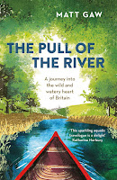
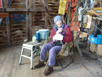

{kind=link}

This is a tale of two Matts. Nicci Gerrard and I met the first Matt -- Matt Gaw -- in the authors' room at Felixstowe Book Festival. He was talking about rivers: we were focused on dementia. The two things could have mixed -- I'll never forget the deep comfort that the Deben gave my mother in her most desperate moments, and how she continued to yearn for the river even when I'd taken her far inland. But our session and Matt's were scheduled to be separate so I contented myself with buying his book. Let me commend it to you.The Pull of the River, is an account of two friends in a home-built canoe, setting out to explore the upper (usually non-tidal) reaches of a dozen UK rivers. Their adventures are of a manageable sort -- though drowning is always an option. It's within the fine-writing, psychogeography genre that (for my taste) can too easily capsize into pretentiousness. It doesn't. Matt Gaw is interested in his own capacities (he gets cold and scared, needs to push himself to continue) but he's always more interested in the rivers themselves and achieves a lovely range of tone within his writing. Here's his account of the three nymphs ‘conceived from the mist, rain, snowmelt, moss and marsh and born to the Lord of the Mountains, Plynlimon':
When the day came for them to leave their home, to set out into the world, Ystwyth headed west, taking the shortest route to the coast, meeting the Irish Sea by the town that would take her name. Hafren went next, winding through England and Wales, travelling long miles until she reached the Bristol Channel; her shimmering route became known as the Severn. But the third daughter Vaga (the Latin name of Wye, meaning wandering), wanted neither to rush nor spend time in the world of men. Instead she chose a quieter route, whispering through the hills and crags, seeking out the wild places where beauty lived on. She sang through valleys and forests: a song for the porpoising otter; for the salmon; for the curtseying bob of the dipper; and the kingfisher, whose jewelled back she softly kissed. She danced and darted, joyful, serene, all the way to Hafren, who rushed back upstream to meet her and guide her to the sea.’
He can also get angry. The state of the River Lark ‘trammelled through a flat-bottomed wedge of slimy concrete' by Tesco in Bury St Edmunds had left environmentalist Roger Deakin ‘crying in his car’. Gaw agrees:I think I probably lived in Bury St Edmunds for a good year before I even noticed the river. Before I realised that the sludge-filled ditch where I went running was the Linnet, a tributary of the Lark. The Lark. The clue is in the name. A place that should sing and burble in flight. One of only 200 chalk streams in the world, it ought to be revered and loved, not subdued with concrete, broken by sluices and cruel flood defences. It is a source of shame, or bloody well ought to be.
It's a terrific chapter; horrified, repelled, pugnacious yet keeping faith with the river's essence:
This river, widened, narrowed, sucked dry, polluted, ignored and forgotten, still stirs up spirituality. It still has power, it can still be resurrected. For all the despair I have felt on this journey at the Lark's treatment, there have also been reasons for hope: the signs of care; the hard work to heal and restore the river's flow, to make it sing again.
 |
| Mum (aged 91) in the Everson's shed, helping with PD's fitting out 2015 |
{kind=link}
Matt Lis, who you might think had enough to do -- regenerating the yard and dealing with his Crusty Customers -- also joined the committee of the River Deben Association. This admirable organisation seeks to 'initiate and support developments that will safeguard the river and its valley, and take steps to resist or ameliorate those that are likely to have a detrimental effect.' Francis and I have been members for several years but have done nothing other than subscribe. Matt Gaw, in The Pull of the River pays regular tribute to the groups of committed individuals (the Bury Water Meadows group, for example) who lobby for access, for environmental sensitivity, understanding and knowledge. He edits the magazine for the Suffolk Wildlife Trust . A few weeks ago Matt Lis heard that the RDA needed a volunteer editor for its magazine, The Deben: he asked his Crusty Customer if he could pass them my contact details -- a masterstroke, how could I say no? Since then I have met the current editor and the chairman, read a stack of back issues and begun to look at 'my' river with new eyes. A fortnight ago, for instance, I was landed on the sea wall above Waldringfield to walk down and collect a car in one of those regular manoeuvres when you reach the end of a weekend with family boats, vehicles and people scattered at all points. As I walked I noticed some lines of wooden stakes with interwoven twigs 'Aha,' I thought 'part of the saltmarsh project, they'll be measuring that.' (Correction: we'll be measuring...)
{kind=link}
Clearly I'm going to learn a lot -- but I'm glad that my personal task is the magazine rather than scrutinising the detail of planning applications, monitoring flood defences or even measuring the rate of saltmarsh regeneration. Such things are vital and we need them to happen and we need to know that they are happening in order to offer our understanding and support when needed. Yet there are also the imaginative and spiritual aspects, the responses to the river that come through myth and music, that are experienced by swimmers and sand-castle builders as well as sailors, which apply to people of all ages. I wish I had taken a photo of my small niece from Berlin utterly absorbed in a complex digging project on the Horse Sands at low water. But I didn't as the light was fading, the wind freshening and I was far too busy helping her. Later she sat in Peter Duck's cabin and drew what we had done, while outside, in the dark, the flood tide washed our work away. The more I think about the scope to celebrate these things, even in a small, bi-annual magazine, the happier I feel. I hope that others, of all ages and interests, will feel similarly and contribute to The Deben's pages.
(Joining the RDA is good too -- here's the membership page -- £4 individual, £6 couple -- you'll get the mag twice a year and help to protect our lovely river.)
{kind=link}